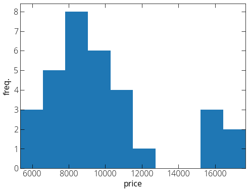
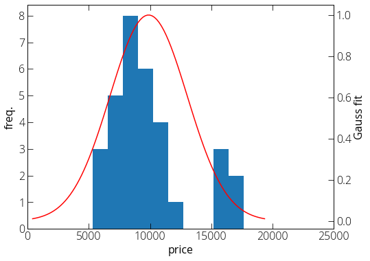
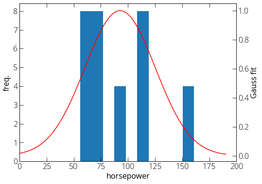
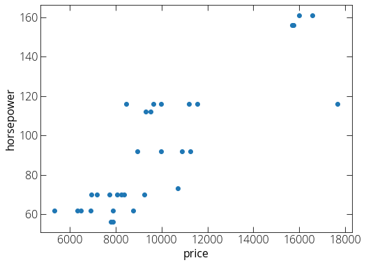

Generative model for classification
Here we fit each class (independently) with a model. Say we have two classes with one dimensional probability distributions P_1(x) and P_2(x).
Let's say our training set has \pi_1 fraction of class one and \pi_2 fraction of class two. \pi_1 + \pi_2 = 1.
Now for a new point (x), we predict its class for which \pi_iP_i(x) is maximum. Note that \pi_i is determined based on our training dataset.
Let us try to look at it with a practical dataset. I am going to use car price dataset that we used in our linear regression example.
You may download a copy of the data:
wget https://pranabdas.github.io/drive/downloads/datasets/car-price.csv
First load the data using pandas:
import pandas as pd
data = pd.read_csv("~/Desktop/car-price.csv")
# Replace the ? marks with NaN
data.replace("?", "NaN", inplace=True)
# Some data are set as object while importing. we can fix that.
data["price"] = data["price"].astype("float")
data["horsepower"] = data["horsepower"].astype("float")
# Remove the rows with NaN values in price and horsepower col
data = data.dropna(subset=['price', 'horsepower'])
# How many unique car models do we have?
data['make'].unique()
First step, we try to classify the make/model of the car looking at only at one variable, say price. How does the price distribution looks for a given model?
import matplotlib.pyplot as plt
import numpy as np
%matplotlib inline
plt.rcParams["figure.figsize"] = (8, 6)
# Select Toyota cars only
data_copy = data.loc[data['make'] == 'toyota']
plt.hist(data_copy["price"], 10)
plt.xlim(min(data_copy["price"]), max(data_copy["price"]))
plt.xlabel("price")
plt.ylabel("freq.")
plt.show()

The sample size looks very small, still let's try to fit the distribution with Gaussian distribution.
from scipy.stats import norm
mu = np.mean(data_copy['price'])
var = np.var(data_copy['price'])
std = np.sqrt(var)
fig, ax1 = plt.subplots()
ax2 = ax1.twinx()
ax1.hist(data_copy["price"], 10)
plt.xlim(0, 25000)
ax1.set_ylabel("freq.")
ax1.set_xlabel("price")
price_axis = np.linspace(mu - 3*std, mu + 3*std, 100)
ax2.plot(price_axis, norm.pdf(price_axis,mu,std)/\
max(norm.pdf(price_axis,mu,std)), 'r')
ax2.set_ylabel("Gauss fit")
plt.show()

Here \pi_{toyota} is (number of toyota cars)/(total number of cars in our test set), and P_{toyota}(price) is given by our Gaussian distribution.
Generative model in two-dimension
Instead of only one variable, we can use another variable (say engine size) in our model. In this case, we can fit the data to a two dimensional Gaussian. The relevant parameters are: means (\mu_1, \mu_2), and covariance matrix:
\Sigma = \begin{bmatrix} var(x_1) && cov(x_1 x_2) \\ cov(x_2 x_1) && var(x_2) \end{bmatrix}
It's a symmetric matrix as off-diagonal terms \Sigma_{12} = \Sigma_{21}. The form of the distribution:
If two variables (x_1 and x_2) are independent, the elliptic contour of two dimensional Gaussian would be axis-aligned.
Now in our car price data, let us consider another variable horsepower along with the price. Here is the distribution of horsepower for Toyota cars.
from scipy.stats import norm
mu = np.mean(data_copy['horsepower'])
var = np.var(data_copy['horsepower'])
std = np.sqrt(var)
fig, ax1 = plt.subplots()
ax2 = ax1.twinx()
ax1.hist(data_copy["horsepower"], 10)
plt.xlim(0, 200)
ax1.set_ylabel("freq.")
ax1.set_xlabel("horsepower")
horsepower_axis = np.linspace(mu - 3*std, mu + 3*std, 100)
ax2.plot(horsepower_axis, norm.pdf(horsepower_axis,mu,std)/\
max(norm.pdf(horsepower_axis,mu,std)), 'r')
ax2.set_ylabel("Gauss fit")
plt.show()

So how does the price vs. horsepower relation looks like?

We can see there is a positive correlation. Now we can find out the relevant parameters:
>>> mu1 = np.mean(data_copy['price']); mu1
9885.8125
>>> mu2 = np.mean(data_copy['horsepower']); mu2
92.78125
>>> cov_car = np.cov([data_copy['price'], data_copy['horsepower']]); cov_car
array([[1.02719104e+07, 8.97956351e+04],
[8.97956351e+04, 1.08682157e+03]])